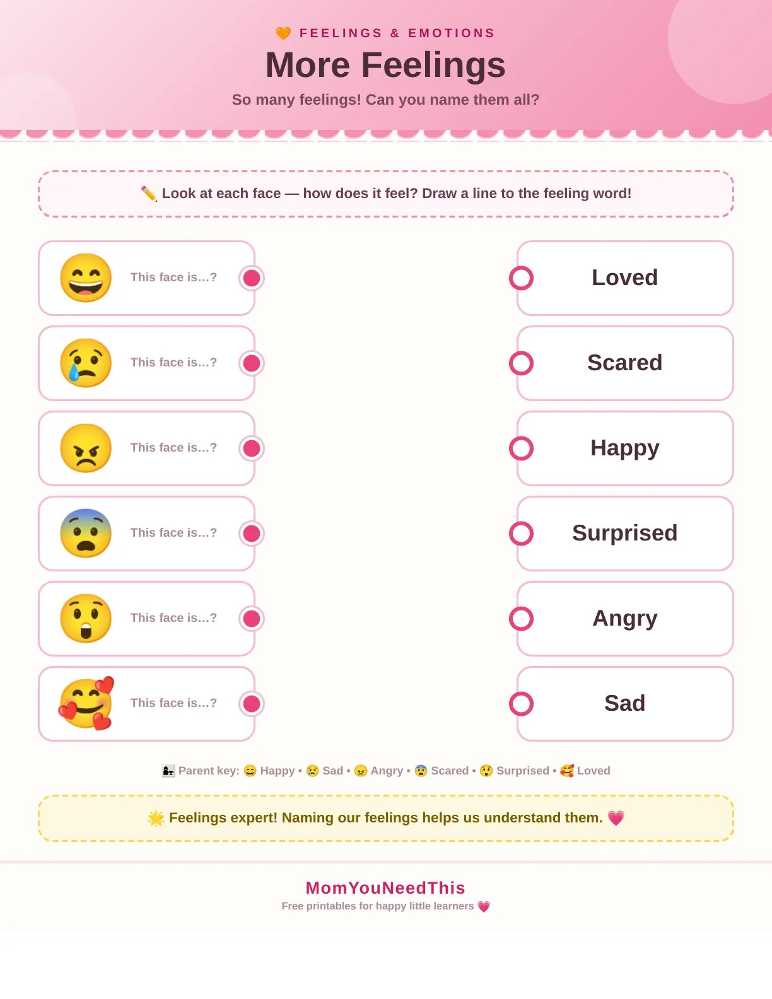

⭐ More Feelings Activities Every Feeling Matters
Feelings come in all colors. This collection of extra activities helps children explore the full rainbow of emotions — from proud to shy, excited to calm — in playful, pressure-free ways.
Quick Answer
This free printable feelings activity expands toddlers' and preschoolers' emotional vocabulary (ages 2–5) beyond happy and sad: proud, shy, excited, frustrated, calm, silly, brave, jealous and more — through feelings matching games and play. The idea: a child with twenty feeling words understands their inner weather twenty times better than a child with two. Download and print at home with no signup needed.
At a Glance
- Ages: Toddlers and preschoolers (ages 2–5)
- Activity: Exploring feelings beyond happy and sad — proud, shy, frustrated, brave
- Skills: Emotional vocabulary and matching
- Format: Printable worksheet (PDF)
- Cost: Free, no signup
Most young children start with a two-word emotional vocabulary — happy and sad (sometimes mad) — for a sky that actually has dozens of weathers. These pages stock the rest of the dictionary, one face and one story at a time, because the research on this is plain: children who can name feelings precisely handle them measurably better.
⭐ Explore More Feelings Activities
Explore a rainbow of emotions, play feelings matching games, and build emotional vocabulary through play.
💡 How To Use This Activity
Print a few feelings pages at a time and use them as conversation starters, not lessons: 'show me the proud face,' 'when did you feel shy this week?' Let your child choose which feeling to explore — the one they pick usually has a story attached. The print button opens the full-size page in a new tab if you prefer to print from there.

🖨️ Download Your Free More Feelings Activities Printable
Explore a rainbow of emotions, play feelings matching games, and build emotional vocabulary through play. Print it out, grab the crayons, and you're ready — no signup needed.
⬇️ Download Free Printable 🖨️ Print🎁 Free printable for toddlers & preschoolers
🌈 The Feelings Beyond Happy And Sad
Proud — the glow of “I did it myself.” Children need this word to notice their own competence; naming pride teaches them to keep the receipt of every hard thing they finish.
Frustrated — the feeling of a thing that will not work yet: the zipper, the puzzle piece, the tower. Naming frustration is the first step of persistence — it converts “I can't” into “this is the hard part,” which is a survivable place to stand.
Shy — the wish to join in, arriving slowly. Shyness is a pace, not a flaw; a shy child given the word (and the time) usually enters the game at their own speed, which is the only speed that works.
Excited, silly, calm, brave, jealous, disappointed, surprised — each gets a face and a moment on these pages. Brave deserves its footnote: bravery is not the absence of fear; it is doing the thing while scared, which makes it the only feeling on the list that requires another feeling to exist.
The matching games here work because feelings are learned like colors: by sorting, naming, and catching them in the wild. “Show me the proud face — when did YOU feel proud this week?” is the whole curriculum, and it runs beautifully at dinner.
❓ More Feelings Activities FAQs
What activities are included in More Feelings Activities?
This page collects our free feelings printables in one place: exploring a rainbow of emotions (proud, shy, frustrated, excited, calm, brave and more), playing feelings matching games, and building emotional vocabulary through play. Download the printable below and start learning right away.
Are these activities really free?
Yes — every printable on MomYouNeedThis is 100% free to download and print. No signup, no payment, just tap the download button. This set pairs naturally with the sadness, anger and worry pages — same drawer, same calm moments. This set pairs naturally with the sadness, anger and worry pages — same drawer, same calm moments.
How do I use these activities with my child?
Print a few feelings pages at a time and use them as conversation starters, not lessons: “show me the proud face,” “when did you feel shy this week?” Let your child choose which feeling to explore — the choosing itself is information. The matching games replay well at meals, where the day's real feelings are already on the table.